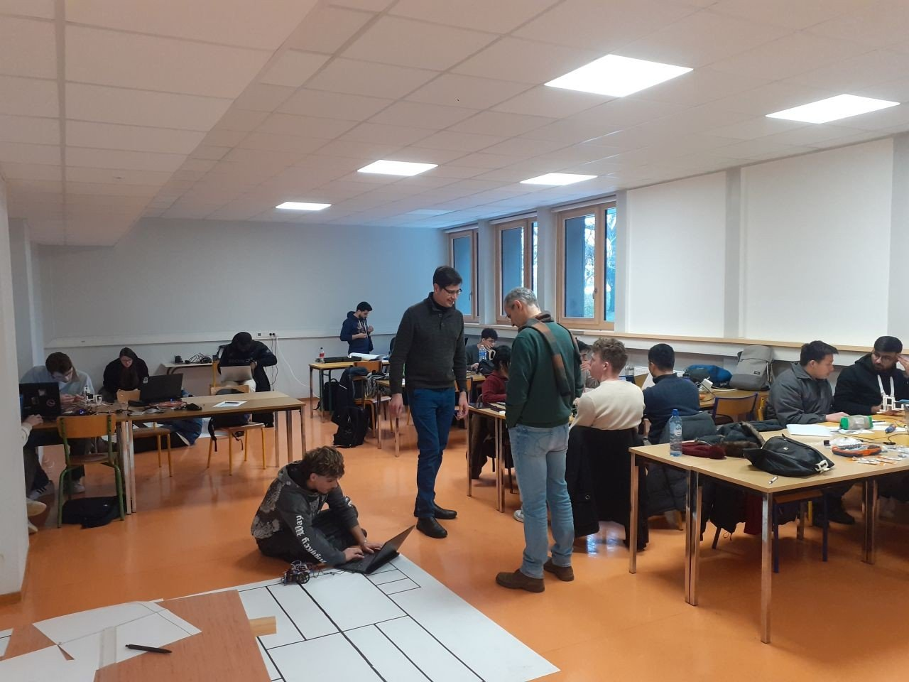

Erasmus+ BIP: Control, Perception & Embedded System Programming for Robotics
Certificate: View Credential
Overview: A Blended Intensive Programme (6 ECTS) run by four European universities. It paired an online component on MicroPython and embedded programming with an on-site week in Besançon. During that week, international teams built robots from 3D-printed parts and real hardware and competed in timed challenges. Grading was based on challenge performance, a presentation and a technical report.
Duration: Oct 2025 – Jan 2026 (online part: 14 Oct – 18 Dec 2025; on-site week: 5 – 9 Jan 2026)
What I Practiced
Skills Gained
- Microcontroller programming: sensors and actuators, digital/analogue I/O, I²C and PWM peripherals
- Modelling and controlling manipulators with forward and inverse kinematics and coordinate-frame transforms
- Mobile-robot programming: line following, odometry, motion and path planning, and collision handling
- Hardware-in-the-loop development, additive manufacturing, and teamwork in international teams
Projects
- SCARA Manipulator on ESP32: I handled the embedded software and inverse kinematics for a 3D-printed SCARA arm doing pick-and-place and palletizing with frame transforms.
- Autonomous Line-Following AGV: a differential-drive robot that plans routes with Dijkstra, re-plans around obstacles and delivers a box using an electromagnet.


Why it matters: In one intensive week I went from a box of parts to working robots under competition pressure, integrating mechanics, electronics, kinematics and planning, and working in an international team.